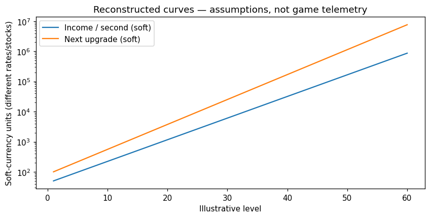
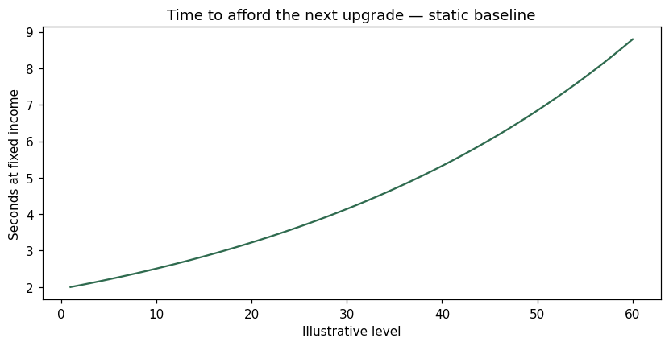
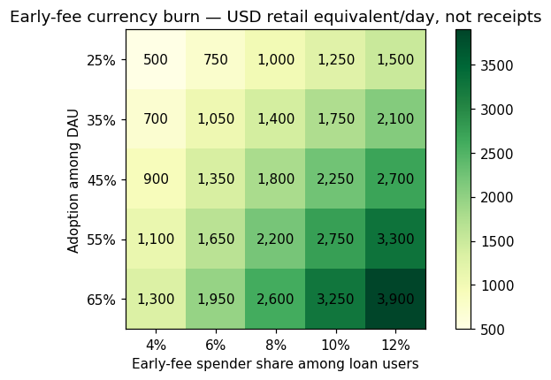

Two-minute walkthrough
Follow one decision through the model
- Open the workbook’s Parameters tab. Blue cells are active inputs with unit bounds.
- Set additional paid replenishment from {{paid_replenishment_pct}} to 0%. Loan Desk cash becomes zero; ingot consumption remains {{ingots}} per day.
- Try the fixed reference example: 4h term, 12h buffer, 40% principal, 10% maturity interest and a 50% limit. A 1.35× multiplier yields 47%; 1.50× yields 62% and BREACH. The current scenario below uses the JSON inputs.
- Use KPI Impact to compare assumptions, then read the experiment plan below before interpreting any scenario as a business case.
Baseline
Reconstruct the economy, then state what it cannot prove
The toy baseline starts at {{income_start}} soft currency/sec and a {{cost_start}}-unit upgrade, with {{income_growth}}× income and {{cost_growth}}× cost growth per level. The assumed offline buffer is {{offline_hours}} hours. These are adjustable design anchors, not recovered game values.


The proposal therefore treats the Loan Desk’s engagement value as a hypothesis. A production decision needs actual balances, upgrade cadence, prestige behavior and a progression simulation.
Opportunity A
A Loan Desk that locks liquidity and consumes ingots
A player locks a share of available soft cash for a fixed term. Income is temporarily boosted. At maturity, principal returns plus a bonus. The soft side is a faucet. Early repayment fees and an optional extra daily slot consume premium currency; that consumption is a separate sink.
| Representative player, level {{level}} | Default scenario |
|---|---|
| Unboosted income | {{income}} soft/sec |
| Principal locked | {{principal}}M soft |
| Term / revised multiplier | {{loan_hours}} hours / {{loan_multiplier}}× |
| Extra boost income plus maturity interest | {{benefit}}M soft |
| Total reward / normal term income | {{reward_pct}} · {{guardrail}} against a proposed {{max_reward_ratio_pct}} limit |
| Full-use daily bonus ceiling at fixed income | {{max_daily}} of normal daily income |
The current {{loan_multiplier}}× scenario includes {{maturity_interest_pct}} maturity interest on principal. In the fixed 4h reference example above, reducing the multiplier from 1.50× to 1.35× lowers the total bonus from 62% to 47%. A passing arithmetic check does not establish fairness, retention lift or absence of cannibalisation.
- One active loan at a time; no multiplier stacking. Daily slots are sequential, with at most one paid extra slot.
- The workbook caps completed loans by the hours available in a day and flags an infeasible slot schedule. It does not simulate reinvestment or early-repayment timing.
- Principal is a fraction of actual available cash in the proposed game implementation. The sheet uses an assumed offline buffer; it does not claim to prevent every hoarding exploit.
- Premium acceleration can affect progression. It must be assessed for fairness and complaints; a temporary reward alone does not prove there is no pay-to-win concern.
Currency and cash
Keep consumption separate from additional receipts
At {{dau_fmt}} DAU, {{adoption_pct}} adoption, {{early_spender_share_pct}} early-fee spenders and a {{early_fee}}-ingot fee, the base scenario consumes {{ingots}} ingots/day, worth ${{retail}} at the assumed retail exchange rate. Free grants or existing inventory can fund that spend. It is not automatically new revenue.
| Additional paid replenishment | Loan cash/day | Meaning |
|---|---|---|
| 0% | $0 | All consumption funded without new paid receipts |
| 10% | ${{cash_10}} | Low reference case |
| 25% | ${{cash_25}} | Reference case |
| 50% | ${{cash_50}} | High reference case |

Extra-slot buyer share is {{extra_buyer_share}} in the current scenario. Extra-slot spending is suppressed when no additional sequential loan fits in the day. Set it to 2% and change the slot price to inspect that separate sink. Free slots, term and active-loan limits constrain the proposed schedule; they are not a guarantee of player demand.
Opportunity B
Size opt-in ad rewards using current income
A reward worth {{reward_minutes}} minutes of current income remains proportional as the player advances. A separate 2× income-ad option is valued by its duration. Neither value establishes that players will watch more ads.
| Assumption / output | Baseline | Scenario |
|---|---|---|
| Ad starts per watcher/day | {{baseline_views}} | {{tuned_views}} |
| Rewarded cash receipts/day | ${{ad_base}} | ${{ad_tuned}} |
| Scenario daily change | ${{ad_delta}}, at the same assumed audience, completion rate and ${{rewarded_ecpm}} eCPM | |
The {{baseline_views}}→{{tuned_views}} change in ad starts is a hypothesis, not a measured effect. Completion is applied separately before completed-view eCPM. Set scenario views equal to baseline views to test no response, or lower to see a decline. A placement experiment should hold forced-ad frequency constant and measure retention separately. Interstitial revenue is outside this workbook.
Combining the current ad-view hypothesis with the cash-conversion scenario gives blended cash ARPDAU ${{blended}} versus an assumed ${{baseline_cash}} baseline, or ${{annual}} annualized at static DAU. This is arithmetic under assumptions, not a forecast. No retention lift has been converted to revenue.
Validation
Randomize at feature eligibility and finish the follow-up
- Eligibility. For A, randomize established players when they first reach the proposed late-game feature. For B, randomize eligible ad-watchers separately. Stratify by platform and progression band. Start with control versus one treatment; do not overlap economy experiments.
- Outcome. Pre-register 14-day net receipts per assigned eligible player as the primary outcome. Track loan adoption or opt-in views as mechanism metrics, plus return on day 1/day 7 after first exposure. That return metric is not install-cohort D1/D7.
- Sample size. Use pilot player-level receipt variance to size a 3% relative minimum detectable effect, 80% power and two-sided α=0.05. Fix the analysis/sample size before enrollment, cover weekly cycles, then wait for every assigned player’s 14-day window. No numerical sample size is claimed without variance data.
- Guardrails. Proposed thresholds to confirm before launch: lower confidence bound on return-rate difference above −1 percentage point and on session-length ratio above 0.95. Monitor cash balances, progression time, premium inventory sourcing and complaints. Stop on a material breach.
- Decision. Ship only with positive revenue evidence at the pre-registered analysis and guardrails met. Otherwise iterate or stop. Any further variants need a multiple-comparison plan and a new sample-size calculation.
Evidence and limits
An inspectable proposal, with explicit assumptions
All numeric inputs here are illustrative. There is no guaranteed ad-response floor or measured retention payoff. Scenarios are adjustable hypotheses; retail-value consumption is kept separate from additional cash. Kolibri’s official website supplies publisher background only.
The workbook has seven familiar tabs, bounded active inputs, live formulas with preview caches, distinct units, sensitivity cases and breach indicators. The JSON input file and build scripts regenerate the workbook, figures, this page and README; the PDF is rendered from this page. A real implementation still needs measured calibration, progression and stacking logic, inventory cohorts, an operational experiment and review of net-receipt definitions.